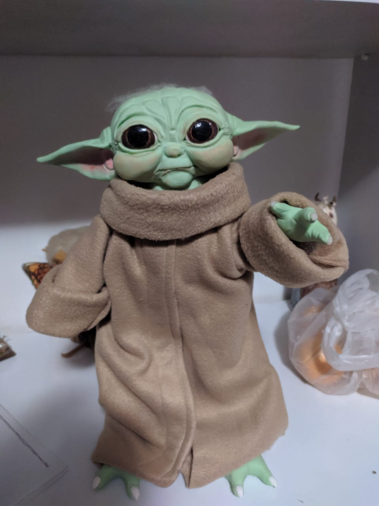
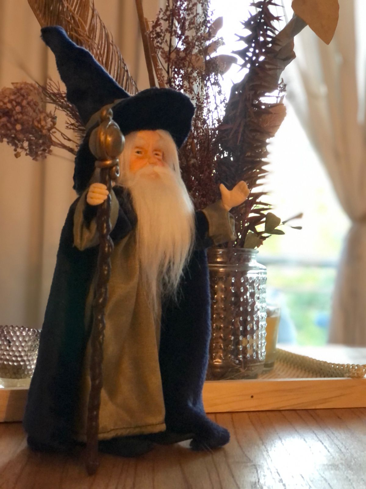
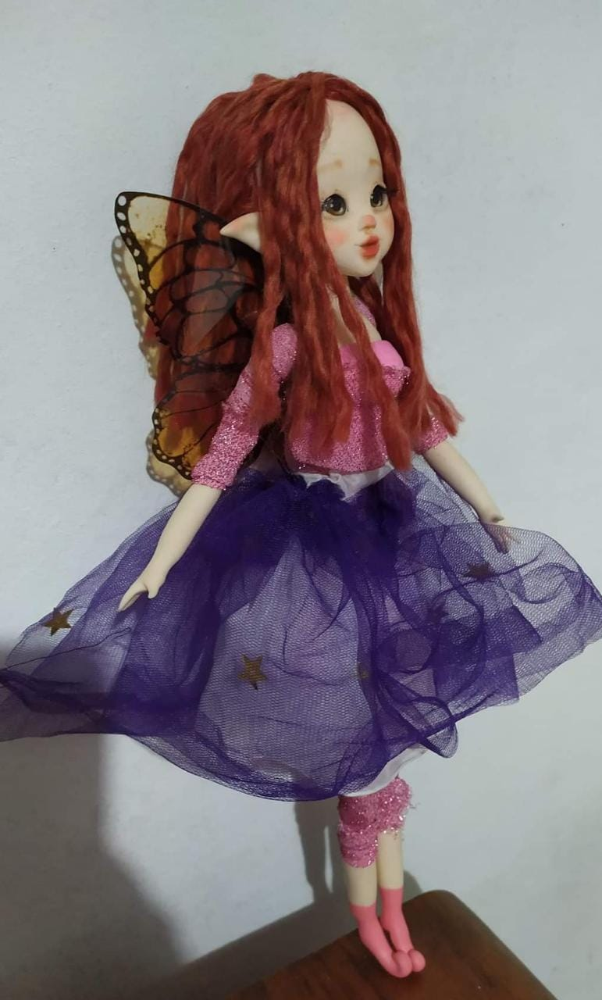
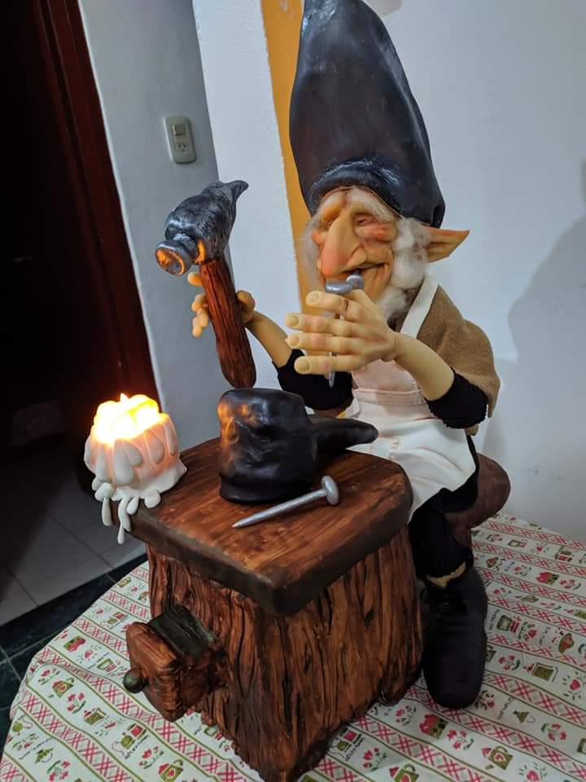

Grogu (también conocido como el Niño y llamado normalmente como
Bebé Yoda por los fanáticos y los medios de comunicación), es un personaje ficticio
de la serie de televisión original The Mandalorian basada en Star Wars y emitida en Disney+

Gandalf es un personaje ficticio perteneciente al legendarium del escritor británico J. R. R. Tolkien.
Es uno de los principales personajes de las novelas El hobbit y El Señor de los Anillos, aunque también aparece en
El Silmarillion, donde se narran sus orígenes.

Hada , Una de sus características más nombradas es la capacidad que tienen de cambiar de apariencia.
Normalmente suelen elegir para presentarse la apariencia humana, y es bajo esta figura cuando protagonizan las historias de amor con mortales.

Zapatero Rápidos y habilidosos, los duendecillos hicieron un par de zapatos en un instante.
Era invierno y los hombrecillos vestidos con ropas harapientas, temblaban mientras trabajaban. .